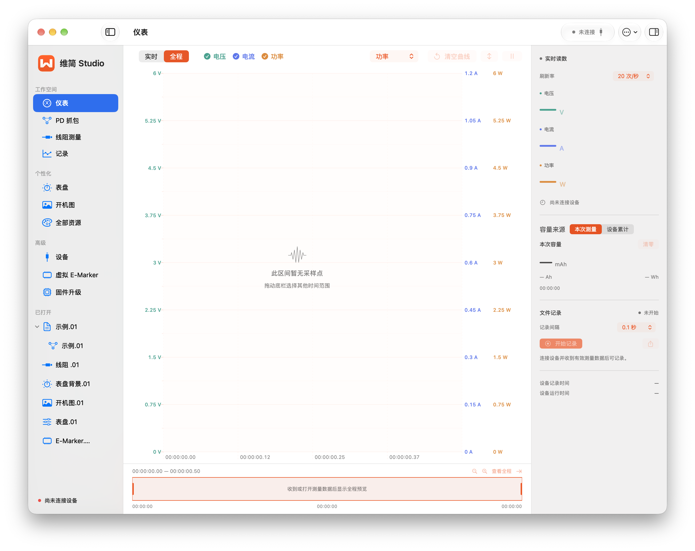
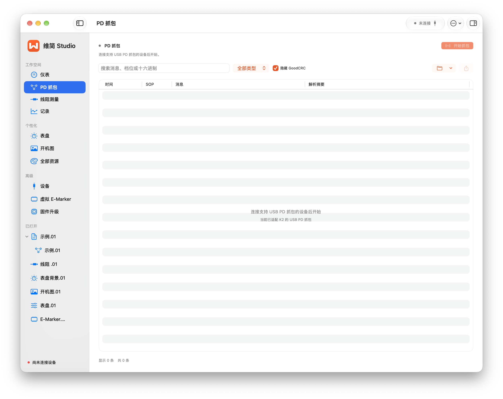
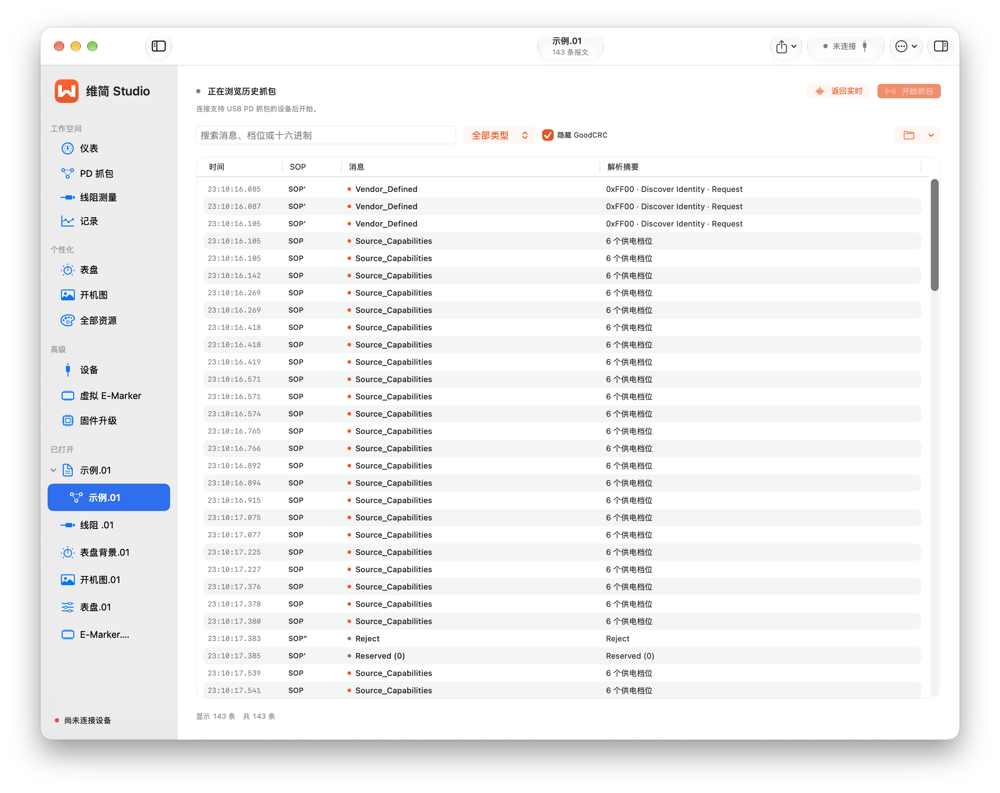
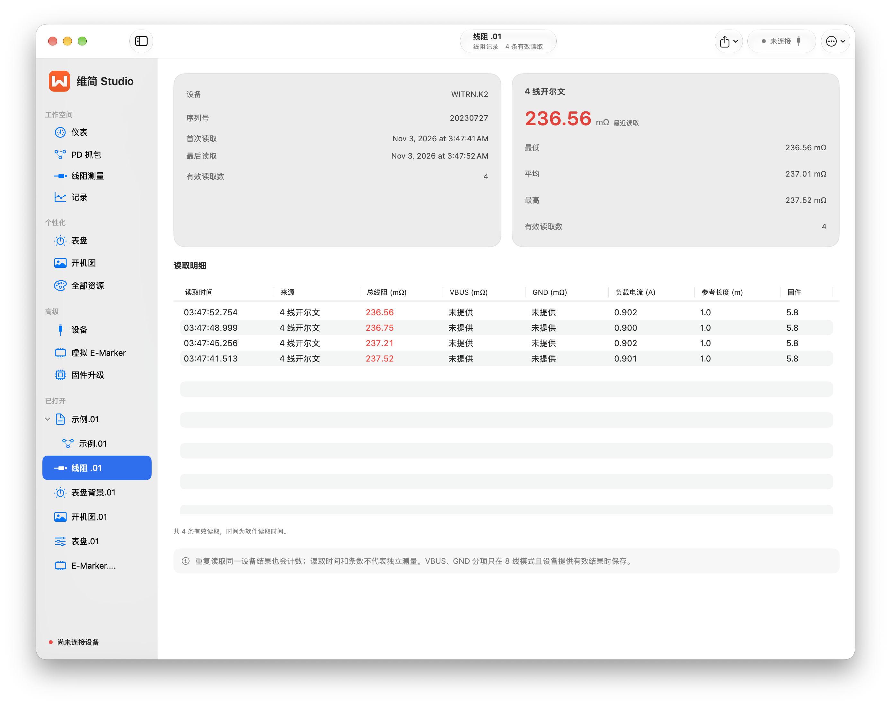
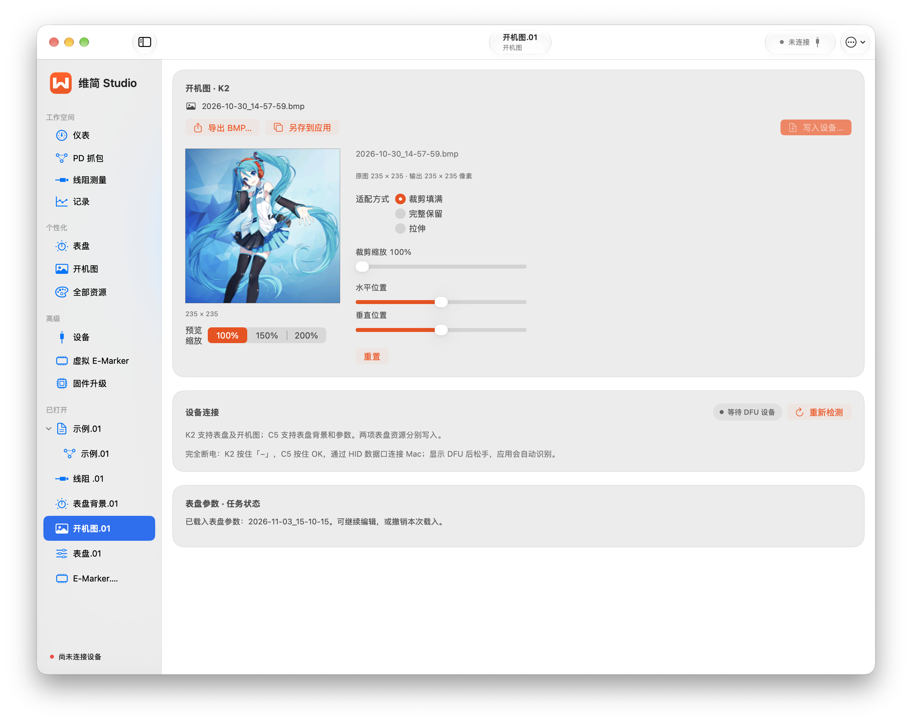
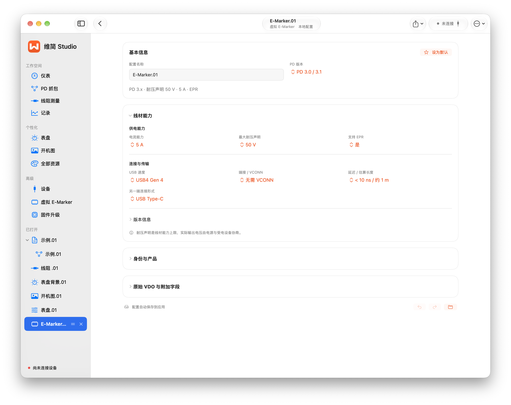

01 / 测量与记录
先看变化，再回到细节。
实时曲线与历史记录使用一致的观察方式。采集时查看读数，结束后继续缩放、选区与分析。
让每一次波动，都能被看见。
电压、电流与功率多指标叠加，使用独立刻度；支持光标读数、冻结、缩放和平移。全程导航帮助你从完整过程回到关注的区间。
「本次测量」的容量与能量由 Mac 积分。旧款缺少的设备累计字段显示为空。


一次测量，可以反复细看。
持续保存 CSV，支持暂停、继续与记录间隔设置。导入本软件记录或官方四列 CSV，查看全程与选定区间的容量、能量和统计占比。

02 / K2 协议与线材
从报文，读到协商过程。
K2 提供 PD 捕获和限定固件的线阻读取。已保存的 K2PD 文件可以脱离设备离线查看。
协商细节，不只是一行摘要。
按类型筛选与搜索报文，查看原始十六进制以及 PDO / RDO、PPS 等解码。支持保存 K2PD 文件，回看连接期间实际捕获的消息。
需在 K2 设备菜单打开 PD 联机开关。CRC 未校验，解码结果需结合原始报文与上下文判断。


保存的协商，随时重放。
打开历史 K2PD 文件，结合时间、SOP 与消息摘要检查协商过程。历史重放不要求当前连接设备。


线阻结果，单独留档。
读取设备在 4 / 8 线模式中保留的结果，保存统计与明细，导出专用 CSV。先在功率表上完成测量，再在 App 中读取。
软件不会主动启动线阻测量，重复读取同一结果不代表多次独立测量。


03 / 表盘与个性化
从背景，到每一项读数。
图片构图与布局编辑分开进行，资源可以保存、导入与导出。设备写入范围请先核对型号。
把喜欢的画面，放进表盘。
导入 BMP、PNG 或 JPEG，选择裁剪填满、完整保留或拉伸适配，再调整缩放和位置。K2 背景为 240 × 240，C4 系列为 320 × 172，使用官方 BMP 交换。

让读数，按你的习惯排列。
K2 提供 17 项、C4 系列提供 12 项布局元素。坐标、颜色、显示与字号按型号开放，支持拖动定位、方向键微调和撤销重做。
使用官方 .k2pic / .c4cfg，支持 ZIP 资源包。字体为替代预览，实际显示以设备为准。

从开机第一眼，换个风格。
制作 235 × 235 的 K2 开机图，调整图片构图、保存资源，并通过 K2 DFU 路径写入设备。
C4 / C4L / C5 不开放 K2 开机图写入路径。


K2 与 C4 系列采用各自的资源和 DFU 路径。C4 系列表盘要求固件 3.0 起，背景与参数分别写入。查看个性化步骤 ↗
04 / 设备与维护
先认清设备，再进行操作。
设备识别、日志诊断与资源管理有各自入口。维护功能按型号与已确认的设备身份开放。
把连接状态，看得更清楚。
显示真实 USB 名称、VID / PID、识别状态和连接方式。支持重新扫描、连接诊断及原始 HID 日志；陌生接口仅提供手动尝试测量。

把 E-Marker 配置，整理妥当。
最多 10 组自定义配置，支持编辑、导入导出、默认组与排序。设备读取结果与本地配置分开保存，设备读写限定已确认的 K2 DFU 身份。
虚拟参数不会改变实体线材的承载能力。


K2 另有独立固件维护入口。新增型号与维护路径仍待实机验证；完整功能范围以下载版本说明为准。